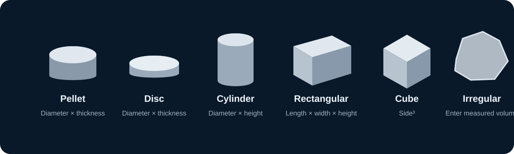

Ceramic Density Analysis
From indexed XRD d-spacings to lattice parameters, theoretical density, bulk density and relative density.
XRD data → Lattice parameters
Example cubic reflections are prefilled. Replace them with your measured three-index hkl and d-spacing (Å); the selected crystal-system model is fitted by linear least squares to 1/d².
Paste cells copied from Excel directly into the table, or import an Excel/CSV file. Column headers such as h, k, l and d-spacing are detected automatically. You can also enter or edit values manually below.
Theoretical density
Uses the fitted unit-cell volume, chemical formula and Z (formula units per unit cell).
How to determine Z: Z is the number of chemical formula units in one unit cell. It must be obtained from the crystal structure and Wyckoff-site occupancies; it cannot be inferred from the crystal system or space-group symbol alone. Example: ideal cubic perovskite ABO₃ in Pm-3m has Z = 1.
Bulk density
Select the sample geometry. Enter dimensions in millimetres or centimetres; the calculator converts them to cm³ automatically.

Choose the closest geometry to your ceramic specimen.
Relative density
Automatically combines theoretical and bulk density.
Scientific notes & limitations
- The d-spacing input is assumed to be correctly indexed and expressed in Å. The method does not identify peaks or refine 2θ positions.
- The fit minimizes residuals in 1/d², not directly in 2θ. Use enough independent reflections spanning the required hkl combinations.
- Rhombohedral uses rhombohedral axes; monoclinic assumes unique b. Triclinic and low-symmetry fits require at least six independent reflections and may be sensitive to indexing errors.
- Theoretical density assumes the entered formula, Z, full crystallographic occupancy and a single phase.
- Bulk density here is mass divided by externally measured volume. Relative density above 100% is a warning to review inputs and phase assumptions.